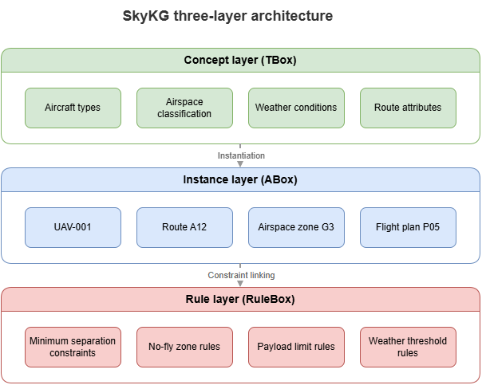
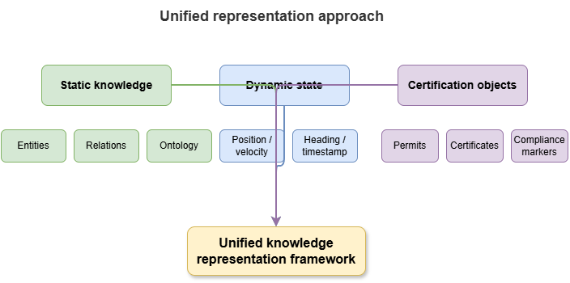
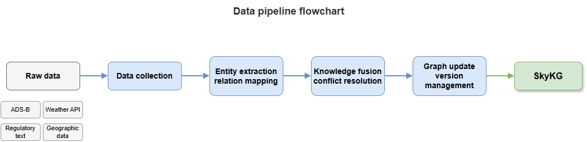

After the domain abstractions of Chapter 5, this chapter turns to engineering: how knowledge is organized, represented, and maintained. It presents the layered ontology architecture of the low-altitude traffic knowledge graph (SkyKG), unified representation of static and dynamic elements, multi-source ingestion, and symbolic encoding of rules—supplying a runnable unified knowledge base for later neuro-symbolic reasoning.
6.1 Ontology layering: concept layer, instance layer, rule layer#
To ensure strict logical reasoning and good extensibility, SkyKG uses a top-down three-layer ontology:
Concept layer (TBox): the graph skeleton or meta-schema. Using OWL and related Semantic Web languages, define UAM classes, properties, and taxonomies—e.g.
Aircraftsuperclass with subclassesMultiRotorUAVandeVTOL, with disjointness or equivalence axioms where needed.Instance layer (ABox): the graph body—concrete entities instantiating TBox classes—e.g. individual
SF-X01as an instance ofMultiRotorUAV. ABox scale is typically large and grows with operations.Rule layer (RBox / RuleBox): the graph norms—beyond classical TBox/ABox alone, a dedicated logical rule base constraining entity behavior and relations—e.g. SWRL rules such as “if two UAS occupy the same minimum-separation cell simultaneously, raise a conflict alert.”
6.2 Entity–relation patterns and attribute modeling#
Under the concept layer, schema design refines core entity relations and attributes.
Spatial topology relations among grids, waypoints, and pads—e.g.
adjacent_to,intersects,contains.Spatiotemporal occupancy relations between aircraft and resources—e.g.
currently_occupies,plans_to_cross.Management and affiliation relations—e.g.
operated_by,controlled_by.Attribute constraint models: distinguish static attributes (max takeoff weight, ceiling limits) from dynamic attributes (real-time battery, wind).
6.3 Unified expression of static knowledge, dynamic state, and certification objects#
Urban low-altitude traffic is highly dynamic and safety-critical. SkyKG must host three heterogeneous kinds of information in one graph framework:
Static background knowledge: building layouts, fixed route topology, weather station locations—rarely updated; forms the base map.
High-rate dynamic state: real-time 4D tracks (lon, lat, alt, time), sudden weather changes—to avoid write storms, often use property graphs or TKG patterns with timestamps on edges or attributes as metadata for temporal evolution.
Certification objects and credentials: core to trustworthy governance. High-stakes inferences or entity states link to certificate objects recording data provenance, model version used to compute the state, confidence intervals, and compliance flags—graph-native audit trails.
6.4 Encoding rule constraints: logical rules, soft constraints, conflict resolution#
Turning natural-language aviation regulations (e.g. CAAC CCAR-class material) into executable graph constraints is key to calibratable reasoning.
Hard constraints: encode in first-order fragments or Datalog-style rules for non-negotiable safety floors—e.g. “no unapproved entry into core no-fly volumes.” Used for consistency checking; violating nodes/edges are blocked and alerted.
Soft constraints: non-fatal optima—e.g. “avoid prolonged hover over residential areas at night for noise”—via Markov logic networks (MLN) or probabilistic soft logic (PSL) with weights.
Conflict resolution: when rules clash (e.g. shortest path vs. temporary airspace control), the ontology embeds a priority graph with meta-rules so lower-priority rules are suppressed, preserving deterministic inference channels.
6.5 Graph construction pipeline: acquisition, cleaning, mapping, fusion, updating#
SkyKG engineering follows a standard data-governance pipeline specialized for low altitude:
Ingestion and cleaning: remove drift-corrupted track points; repair missing registration metadata.
Ontology mapping: R2RML-style mappings from relational flight-plan tables to classes/properties; IE models extracting rule triples from PDF regulations.
Knowledge fusion: entity alignment—e.g. merge radar “unknown target A” with UTM-reported “UAS X” via spatiotemporal trajectory similarity into one node.
Continuous updating: batch refresh (daily/weekly) for infrastructure plus streaming (millisecond-scale) for aircraft state—keeping the graph aligned with a digital twin of the physical world.
6.6 Multi-source data ingestion: telemetry, maps, weather, policy, and operation logs#
A unified base must break data silos. SkyKG integrates five core families:
Telemetry: high-rate streams (ADS-B, 5G/satellite messages) for dynamic aircraft attributes.
Maps and GIS: vector data (GeoJSON), BIM, as spatial nodes and grid-topology edges.
Meteorology: dynamic fields (wind, precipitation forecasts) as environmental attributes on spatiotemporal nodes.
Policy and regulation: unstructured text parsed by LLMs or expert workflows into RBox rules.
Operation logs: historical dispatch and incident records as event-graph subnets for causal analysis and risk tracing.
6.7 How the unified knowledge base supports later models#
SkyKG is not merely a static graph database but the oxygen supply for the book’s neuro-symbolic stack:
Static cognition (Part III): deterministic domain knowledge and hard rules let LLMs use GraphRAG to produce grounded, less hallucinated safety assessments.
Dynamic coordination (Part IV): spatial topology and temporal evolution feed GNN computational graphs, equipping multi-UAS coordination models with physical constraints and global situational structure.
Trustworthy certification (Part V): pervasive certification objects and audit tags give conformal prediction and statistical certification a structured substrate—recalibrating and reinterpreting “black-box” outputs in symbol space.
From the next chapter onward, the book enters algorithmic models—how structured symbolic knowledge couples with state-of-the-art deep learning into deployable neuro-symbolic inference.
Chapter summary#
This chapter covered construction and unified representation of the low-altitude traffic KG: TBox / ABox / RuleBox layering; entity–relation and attribute patterns; unified treatment of static knowledge, dynamic state, and certification objects; hard/soft rules and conflict resolution; the acquire–clean–map–fuse–update pipeline; multi-source ingestion; and how SkyKG feeds static cognition, dynamic graph reasoning, and certification—not a passive store but a central platform for what follows.
Key concepts#
Three-layer ontology: concept, instance, and rule layers jointly organizing the KG.
Unified representation: co-locating static knowledge, dynamic state, and certification objects in one graph idiom.
Rule constraint encoding: turning regulations, soft constraints, and priorities into machine-executable structure.
Knowledge fusion: mapping, aligning, and merging heterogeneous sources into one graph.
SkyKG: unified semantic base and support platform for trustworthy low-altitude governance.
Discussion questions#
Why should static knowledge, dynamic state, and certification objects share one expressive framework?
How should hard and soft constraints divide labor in implementation?
If TBox, RBox, and ABox evolve at different rates, how can overall consistency be preserved?
Case study#
City-wide temporary no-fly notice: extract rules from policy text; map to airspace nodes, time windows, and affected missions; refresh edge subgraphs—illustrating synchronized rule encoding and instance updates.
Figure suggestions#
Figure 6-1: SkyKG three-layer architecture (TBox, ABox, RuleBox).

Figure 6-2: Unified expression of static knowledge, dynamic state, and certification objects.

Figure 6-3: Multi-source acquisition, mapping, fusion, and update pipeline.

Formula index#
This chapter focuses on graph engineering and representation frameworks; no new core derivations.
Indexed terms:
TBox / ABox / RuleBox, static knowledge, dynamic state, certification objects.
References#
Hogan, A., et al. (2021). Knowledge Graphs. ACM Computing Surveys, 54(4), Article 71.
Noy, N. F., & McGuinness, D. L. (2001). Ontology Development 101: A Guide to Creating Your First Ontology. Stanford Knowledge Systems Laboratory Technical Report KSL-01-05.
Berners-Lee, T., Hendler, J., & Lassila, O. (2001). The Semantic Web. Scientific American, 284(5), 34–43.
Dong, X., et al. (2014). Knowledge Vault: A Web-Scale Approach to Probabilistic Knowledge Fusion. Proceedings of the 20th ACM SIGKDD International Conference on Knowledge Discovery and Data Mining (KDD).
Paulheim, H. (2017). Knowledge Graph Refinement: A Survey of Approaches and Evaluation Methods. Semantic Web, 8(3), 489–508.